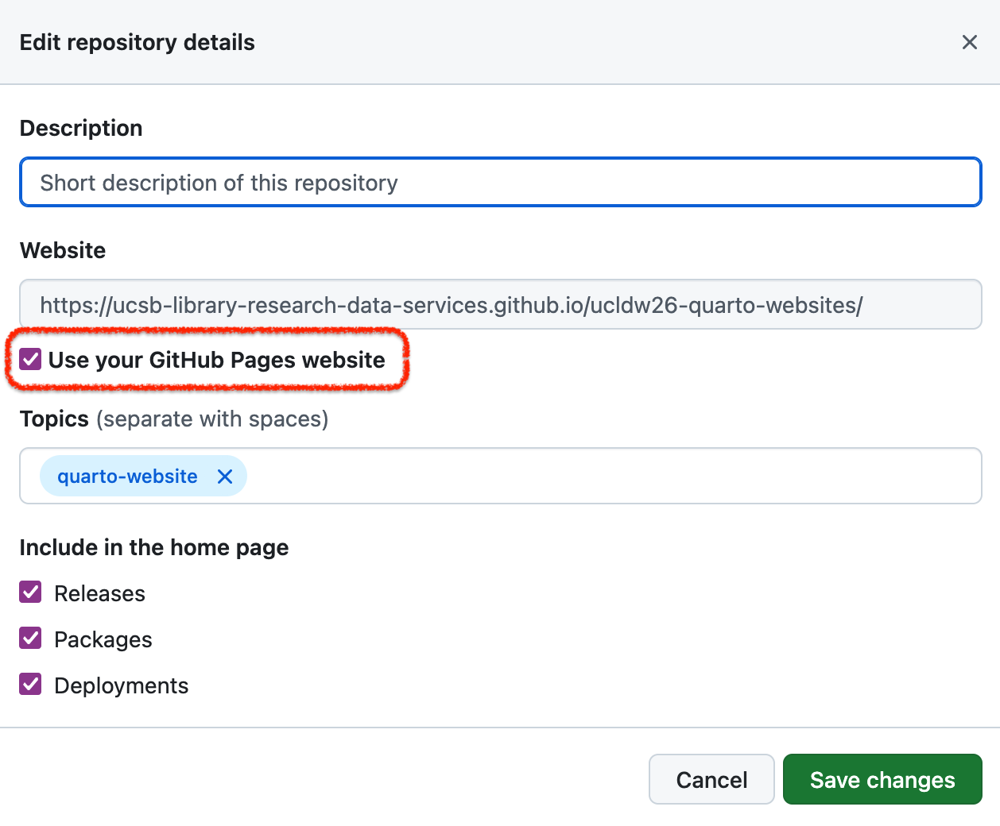

Hosting on GitHub Pages
You can use GitHub pages to host your website for free! Every time you push new content, your website will update within a few minutes!! There are different workflows available for this setup. In this workshop, we are opting to save the rendered html files to a docs folder on the main branch of our repository, which is a naming convention that GitHub uses to point to content for GitHub pages.
| Approach | Pro | Con |
|---|---|---|
| folder | Easy to setup | You need to make sure to first render and commit changes locally |
| folder | Better control when to render the website | More “busy” commits |
| branch | Automatic rendering on push | Setup requires to know (some) GitHub Actions syntax |
| branch | better separation of Quarto and html files | Rendering can be slow |
Using the docs folder
- Setup the
docssubfolder:
In your project folder on your machine, create a docs subfolder. Then edit the_quarto.ymlto specify we want to render content into thisdocsfolder by setting up theoutput-dirparameter
project:
type: website
output-dir: docs
website:
title: "Publishing Quarto websites with GitHub pages"
navbar:
...Disable GitHub Pages automatic rendering: Add a
.nojekyllempty file at the root/top level of your repository. You can use any text editor (including RStudio or VS code) or the command line:touch .nojekyllRender your website locally:
Use either your favorite Integrated Development Environment (IDE) or runningquarto::quarto_render()at the R console.Upload your website to GitHub:
Commit and Push thedocsfolder to your remote repository on GitHubSetup GitHub Pages:
On the GitHub website, navigate to your repository page and click onSettingstab and choosePageson the left panel and select the./docs/folder and save:
6.Add your website URL to your repo:
Go back to the main page of your repository and in the right panel, click on the wheel for settings. Add the link of your website to your repository by checking the box Use your GitHub Pages website:

Using the gh-pages branch
You can also make GitHub render your Quarto website! It is a more automated workflow, however, it will require you to dig into GitHub Actions scripting. To do so, you will have to create a special branch named gh-pages and write a GitHub Action. Here is the one we used for this website:
Create a
gh-pagesbranchSetup the branch to host your website: On your repository homepage, click the
Settingstab and choosePageson the left panel and selectgh-pagesbranch and the/(root)/folder and save:
Add a new GitHub Action workflow: Go back to the main page of your repository and click the
Actionstab and hit the “New workflow” button.
On the next page with several predefined workflows, click on
Skip this and set up a workflow yourself →Add the GitHub Action code:
on:
workflow_dispatch:
push:
branches: main
name: Quarto Publish
jobs:
build-deploy:
runs-on: ubuntu-latest
permissions:
contents: write
steps:
- name: Check out repository
uses: actions/checkout@v3
- name: Set up Quarto
uses: quarto-dev/quarto-actions/setup@v2
- name: Install R
uses: r-lib/actions/setup-r@v2
with:
r-version: '4.5.1'
- name: Install R Dependencies
uses: r-lib/actions/setup-r-dependencies@v2
with:
packages:
any::knitr
any::rmarkdown
any::lterdatasampler
any::tidyverse
any::plotly
any::sf
any::leaflet
- name: Render and Publish
uses: quarto-dev/quarto-actions/publish@v2
with:
target: gh-pages
env:
GITHUB_TOKEN: ${{ secrets.GITHUB_TOKEN }}Now every time you push to GitHub, your website will render automatically!!